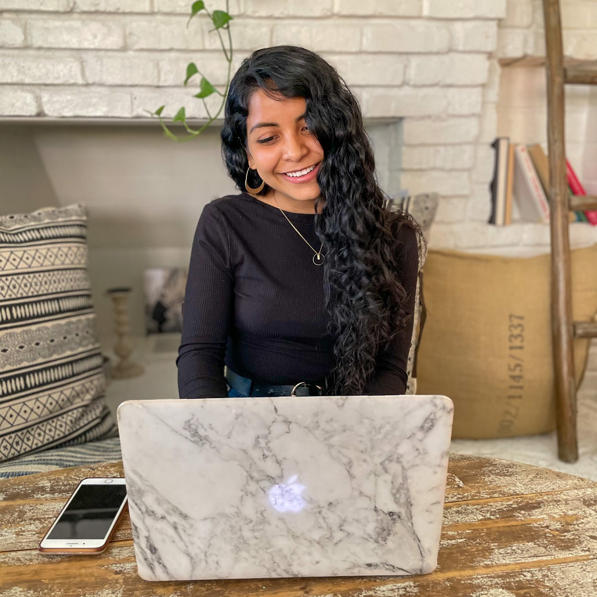
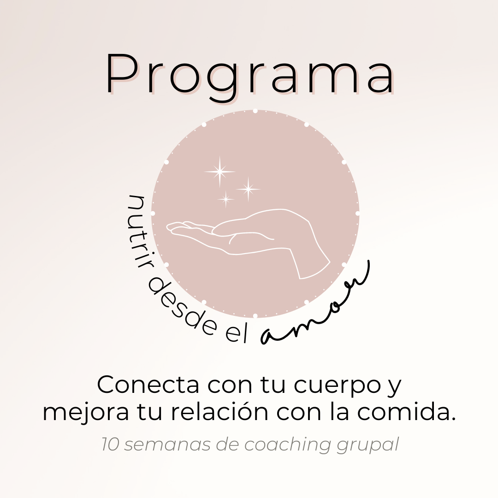

Programa Nutrir Desde el Amor


Nutrir Desde el Amor es un programa grupal de 10 semanas con ocho módulos en vivo para ayudarte a conectar con tu cuerpo y mejorar tu relación con la comida.
-
Este programa te ayudará a:
- Sentirte acompañada a lo largo de tu proceso de mejorar tu relación con la comida dentro de una comunidad que te nutre y te comprende
- Construir una relación con los alimentos más tranquila, fluida y armoniosa
- Soltar la culpa, el remordimiento y el miedo a la comida
- Experimentar mayor calma, confianza y conexión con tu cuerpo
- Relacionarte con tus emociones sin tener que recurrir a la comida
- Sentir mayor confianza en ti misma y tu cuerpo
- Tener recursos y herramientas que puedes aplicar desde el primer día
-
El programa incluye:
- 1 sesión de inducción + bienvenida
- 1 ceremonia de clausura
- 8 sesiones de módulo en vivo + coaching grupal semanal de 90 minutos
- Sesiones grabadas para volver a ver durante el programa
- Worksheets, actividades, ejercicios de reflexión y PDFs semanales
- Acceso a mi y a la comunidad vía Slack
- Conócete y comprende tu historia con la comida
- Reconoce el origen de tus hábitos actuales y comienza a tomar acción alineada desde esta nueva consciencia
- Comprende la nutrición más allá de los alimentos
- Comienza a nutrir tu vida más allá de la comida
- Aprende a cultivar el bienestar de tu cuerpo, mente y alma
- Observa tus creencias y reconoce todo eso que no te contribuye
- Cambia tu mentalidad y suelta lo que te limita
- Abre espacio para construir una nueva relación con la comida y tu cuerpo
- Reconoce el poder que existe detrás de sentir con consciencia
- Aprende a gestionar tus emociones sin tener que recurrir a la comida
- Reconoce el significado y origen de tus antojos, comprende para qué llegan a ti
- Aprender a honrar y satisfacer tus antojos sin culpa ni arrepentimiento
- Identifica cómo se presentan en tu vida tus diferentes tipos de hambre
- Conecta con tus señales internas y aprende a honrar tu hambre.
- Aprende a relacionarte con tu cuerpo más allá de su apariencia
- Reconoce tu valor e integra todas las partes de quien eres
- Abre espacio para aceptarte y practicar amor propio de una manera diferente.
- Aprende a disfrutar del ahora a través de estar en conexión con tu cuerpo
- Permite que tu deseo y tu intuición te guíe a una vida más alineada, plena y expansiva
-
El programa incluye:
- Una sesión de inducción + bienvenida
- Una ceremonia de clausura
- Ocho sesiones de módulo en vivo + coaching grupal semanal de 90 minutos
- Sesiones grabadas para volver a ver durante el programa
- Worksheets, actividades, ejercicios de reflexión y PDFs semanales
- Practicás de meditación, breathwork y embodiment
- Acceso a mi y a la comunidad vía Slack
Vivir en guerra con tu cuerpo no es vivir. Si te sientes lista para salir del ciclo dieta y construir mayor libertad, calma y armonía con la comida, me encantaría apoyarte y brindarte los recursos para que crees los cimientos en este proceso de conexión con tu cuerpo.
¡ESTOY LISTA!